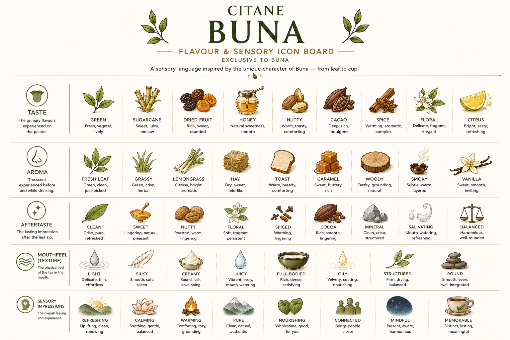

Reference image — Citane Buna Flavour & Sensory Icon Board. Five dimensions. Exclusive to Buna.
How to use the sensory vocabulary
Sensory terms are descriptors, not judgements. A Buna described as "grassy" is not better or worse than one described as "nutty" — these are different expressions of the same leaf under different conditions. Use these terms to be precise about what you perceive, to communicate clearly with others, and to track how a leaf changes across processing pathways and brewing methods.

Fresh, vegetal, lively. The taste of minimally processed or lightly brewed Buna — chlorophyll-forward, with a brightness that signals proximity to the living leaf. Most pronounced in young leaves and infusion-style preparations.

Green, clean, aromatic — the scent of fresh herbs and plant matter. Herbal character is intrinsic to coffee leaf and is strongest in minimally processed styles. It signals the presence of terpene compounds released from the leaf's essential oils.

Dry, sweet, field-like. The aroma of dried grass or straw — a natural development in air-dried or withered leaf. Hay and grassy notes are not defects in Buna; they are character notes of certain processing styles and leaf stages.

Natural sweetness, smooth and rounded. Honey in the cup is a sign of high-quality leaf material and careful processing — it is not added sweetness but a compound expression. Coffee leaf carries natural sweetness that is distinct from other beverage categories.

Delicate, fragrant, elegant. Floral notes are most present in young leaf preparations and light infusions. They signal high aromatic compound retention — a sign of gentle processing and careful brewing at moderate temperatures.

Bright, zesty, refreshing. Citrus notes — lemon, orange peel, lime — appear in lightly processed Buna, particularly cold brew or pour-over where bright acids are preserved. A signal of high chlorogenic acid content and minimal thermal degradation.

Peach, apricot, plum — ripe, sweet, with a slightly jammy quality. Stone fruit notes in Buna tend to emerge in preparations where fermentation or mild oxidation has occurred, developing ester compounds that carry this character.

Mango, pineapple, papaya — bright, juicy, and distinctly warm-climate in character. Tropical fruit notes are particularly relevant for Buna grown in Kerala's climate, where the plant's growing environment can express in the cup.

Bright, tart, fruity — blackcurrant, raspberry, or strawberry character. Berry notes in coffee leaf are associated with certain fermentation profiles and specific variety characteristics. A complex and distinctive note when it appears.

Warm, toasty, comforting. Nut notes — almond, cashew, walnut — develop through light roasting or thermal transformation. A sign of Maillard reaction compounds at moderate intensity. Adds body and depth without astringency.

Deep, rich, indulgent. Cacao notes appear in heavily processed or roasted leaf styles — a sign of significant Maillard development. Distinct from bitterness: cacao is deep and pleasurable; unpleasant bitterness is sharp and uninviting.

Warming, aromatic, complex. Spice notes may be intrinsic to the leaf — particularly in Ethiopian decoction traditions where ginger, cinnamon, or rue are traditional additions — or emerge from the leaf's own aromatic compounds during processing.

Sweet, smooth, inviting. Vanilla-like aromatic compounds can develop in fermented or thermally processed leaf — a sign of certain ester formation. Adds warmth and roundness to the aromatic profile.

Earthy, grounding, natural. Woody notes come from the stem or vascular tissue of the leaf, or from contact with wooden processing equipment. At low intensity, woody aroma adds depth; at high intensity, it may indicate over-aged or poorly stored leaf.

Soil, mushroom, forest floor. Earthy notes in Buna may emerge from fermentation-influenced processing or from the specific mineral content of the growing soil. At low levels, earthiness adds complexity; at high levels, it may signal fermentation problems.

Subtle, warm, layered. Smoke aroma is characteristic of Kawa Daun tradition, where wood smoke is used as a deliberate processing agent. In Citane preparations, smoky aroma indicates deliberate smoke processing. The wood type determines the smoke character.
See Kawa Daun →
Sweet, buttery, rich. Caramel aroma indicates caramelisation of leaf sugars during thermal processing. A deeply pleasant note that signals good thermal development without overheating.

The generalised character of dry heat transformation — encompassing toast, caramel, and cacao on a single spectrum. Roasted notes increase with heat intensity and duration. Understanding where on the roasted spectrum a particular Buna sits is important for consistent description.
See Thermal — Roasting Stages →
Clean, crisp, structured. A mineral character is a documented characteristic of well-processed coffee leaf — noted in research comparing Buna's bitterness profile to mineral water at the low end of the bitterness scale. Signals low astringency and good source water quality.

A subtle mineral salinity that enhances other flavour notes rather than asserting itself. Salty notes in Buna are typically associated with coastal-grown leaf or specific mineral-rich growing soils. At the right level, salinity adds complexity and amplifies sweetness perception.

Delicate, thin, effortless. A light-bodied Buna sits lightly on the palate — clean and refreshing with low viscosity. Associated with short infusions, filter brewing, or young leaf material.

Smooth, soft, silken. Results from the interaction of certain polysaccharides and proteins extracted from the leaf. The sensation of liquid gliding smoothly across the palate without friction or graininess.

Round, lush, enveloping. Characteristic of decoction-style preparations — particularly Engere (milk decoction) where milk proteins interact with leaf compounds to create a distinctly different texture from water-based preparations.
See Engere →
Vibrant, lively, mouth-watering. Stimulates salivation and creates a sense of freshness and vitality. Associated with high natural acidity and compound brightness — more common in lightly processed, young-leaf Buna styles.

Velvety, coating, nourishing. A slight oiliness from leaf lipids released during brewing — creating a coating sensation that contributes to body and perceived richness. At the right level, a positive quality signal.

Savoury, warm, satisfying — the quality of a good stock or consommé. Brothy mouthfeel in Buna is most notable in extended decoction preparations and in milk-based preparations. It is a distinctive quality that sets Buna apart from conventional tea.

Rich, dense, satisfying. High extraction or decoction preparations produce a fuller-bodied cup with more dissolved solids and stronger physical presence. Full body in Buna is not heaviness — at its best, it is satisfying and complete.

Firm, drying, balanced. A slight grip or drying sensation from tannins — not unpleasant astringency, but a sense of form and definition. Structure distinguishes a complex Buna from a flat one.

Smooth, even, well-integrated. No sharp edges — no harsh bitterness, no jagged acidity, no dry grip. Roundness is the integrated outcome of good balance across all mouthfeel dimensions.

A sensation that lingers on the inner surfaces of the mouth — palate, cheeks, and tongue — after swallowing. Coating mouthfeel is associated with higher dissolved solids and certain lipid compounds. It bridges mouthfeel and finish.

Crisp, pure, refreshed. A clean finish — no lingering off-notes, no residual bitterness beyond a pleasant threshold — is the mark of well-sourced, carefully processed Buna. Clean aftertaste is one of the most valued qualities in any high-quality beverage.

A sweetness that emerges or intensifies in the throat and palate after swallowing — a phenomenon documented in fine teas and now observed in quality Buna. The hui gan response indicates the presence of certain polyphenol-receptor interactions that convert initial astringency into a delayed sweet sensation.

A persistent green, vegetal note in the finish — indicating that the fresh, chlorophyll-forward character of the leaf has survived through brewing and is still present after the last sip. A sign of minimal processing and gentle extraction.

A sensation of coolness or freshness that develops in the mouth and throat after swallowing — associated with certain menthol-adjacent aromatic compounds in the leaf. A distinctive and pleasurable aftereffect that signals aromatic compound retention.

A gentle heat that spreads through the chest and throat after swallowing — associated with spice notes, certain phenolic compounds, and extended decoction preparations. The warming aftereffect is valued in traditional Buna contexts, particularly in cooler seasons or morning use.

Mouth-watering, refreshing. A finish that stimulates saliva production — a sign of natural acidity and compound balance. Signals that the cup was satisfying and complete; invites another sip rather than creating dry-mouth discomfort.

Flavour impressions that persist for an extended time after the last sip — typically more than thirty seconds. Long finish is associated with complex compound profiles, high-quality processing, and good source material. A long, pleasant finish is consistently valued across all beverage categories.

A specific note or impression that holds its character across the full duration of the finish — neither fading nor transforming. Persistent character notes are signature elements of a well-defined Buna style.

Uplifting, clean, renewing. The sense that the cup has restored rather than fatigued. Refreshing finish is valued in Buna served cold, in the morning, or where the drinker is seeking a lift without heaviness.

A sensation of reduced moisture in the mouth after swallowing — caused by tannin-protein binding on the palate. Mild drying is structure; heavy drying is astringency. In Buna, drying finish is more common in heavily oxidised or over-extracted preparations and less common in well-processed leaf.

A cup that elevates mood and energy without agitation — the positive stimulation of moderate caffeine combined with aromatic pleasure. Uplifting character is most associated with morning Buna and preparations that emphasise brightness and freshness.

Soothing, gentle, balanced. A cup that settles rather than stimulates — associated with lower caffeine preparations, gentle processing, and warming service temperatures. The calming impression of Buna is one of its distinguishing characteristics relative to coffee.

Warm, familiar, reassuring. A cup that creates a sense of wellbeing and ease — connected to the domestic and social traditions within which Buna has been prepared for generations. Comforting impression is strongest in decoction and milk-based preparations.

Wholesome, good, sustaining. The sense that the cup is doing something beneficial — associated with the known compound content of the leaf and the tradition of coffee leaf as a nourishing household preparation in Ethiopia and West Sumatra.

Earthy, centring, present. A cup that connects the drinker to the land and the moment — the opposite of agitation or distraction. Grounding impression is associated with earthy, woody, and mineral flavour notes and with slow, deliberate preparation.

Harmonious, well-rounded. A cup where no single note dominates — the integration of all sensory elements into a unified, coherent impression. Balance in the cup is the ideal outcome of quality source material and skilled processing.

Multi-layered, evolving, rewarding. A cup that reveals different notes at different moments — in the aroma, the sip, and the finish — and that changes as it cools. Complexity in Buna reflects the diversity of compounds in well-sourced, carefully processed leaf.

Everything in its right place. Harmonious differs from balanced in implying an active agreement between components rather than simply the absence of dominance. A harmonious cup feels composed — as if each element was intended to be in the relationship it occupies.

Transparent, defined, without confusion. A clear cup expresses its character without ambiguity — the notes are identifiable, the finish is readable, the impression is uncluttered. Clarity is a quality of both the liquid (visual clarity) and the sensory experience.

Distinct, lasting, meaningful. A cup that stays with you — that creates a sensory memory and a desire to return. The highest aim of the Buna experience: not just pleasant in the moment, but worth seeking again.